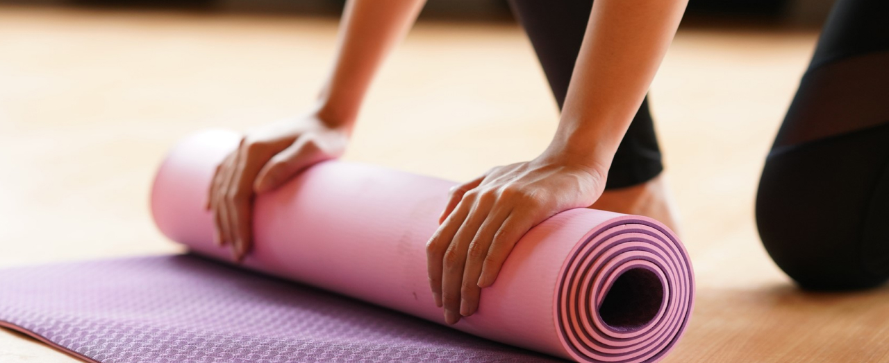

{% set logged = "yes" %} {% extends "master/master.html" %} {% block content %}

<div class="page page-library">
  <div class="container">
    <div class="page__header page__header--link">
      <a href="pages/library.html" class="back-link"
        ><i class="icon-back"></i>Программа «Зарядиться энергией»</a
      >
    </div>
    <div class="library-article__header">
      <div class="library-article__category">Основы йоги</div>
      <h1 class="library-article__title">
        Коврик для йоги: как выбрать и правильно ухаживать
      </h1>
      <div class="library-article__short">
        Как показывает практика, правильная экипировка поможет сделать первые
        шаги более уверенными, избежать травм и быстрее добиться успехов. Начнём
        с основ — с выбора коврика.
      </div>
      <button class="button--favorite">
        <i class="icon-favorite"></i>В закладки
      </button>
    </div>
  </div>
  <div class="library-article__img">
    
  </div>
  <div class="container">
    <article class="library-article">
      <p>
        При выборе коврика для йоги нужно <a href="#"> обращать внимание</a> на
        несколько параметров: толщина, размер, материал, качество сцепления.
        Рассмотрим их по порядку.
      </p>
      <h3>Толщина</h3>
      <p>
        3 мм — стандартная толщина коврика для йоги. Если у вас нет специальных
        запросов, вы ещё не <b>определились</b>, какое направление йоги вас
        больше привлекает, берите именно такой. Он закроет большинство
        потребностей.
      </p>
      <ul>
        <li>3 мм — стандартная толщина коврика для йоги.</li>
        <li>3 мм — стандартная толщина коврика для йоги.</li>
        <li>3 мм — стандартная толщина коврика для йоги.</li>
        <li>3 мм — стандартная толщина коврика для йоги.</li>
        <li>3 мм — стандартная толщина коврика для йоги.</li>
      </ul>
      <p>
        Толстые коврики — от 6 мм — понадобятся, если у вас чувствительные
        колени и спина и вам неприятно упираться локтями в твёрдую поверхность.
        Такие коврики очень удобны, но из-за мягкости на них может быть сложнее
        удерживать баланс.
      </p>

      <ol>
        <li>3 мм — стандартная толщина коврика для йоги.</li>
        <li>3 мм — стандартная толщина коврика для йоги.</li>
        <li>3 мм — стандартная толщина коврика для йоги.</li>
        <li>3 мм — стандартная толщина коврика для йоги.</li>
        <li>3 мм — стандартная толщина коврика для йоги.</li>
      </ol>
      <p>
        Ультратонкие — толщиной 1–1,5 мм — подойдут опытным йогам. С ними не
        возникает проблем с балансом, но нужно учитывать, что они дают минимум
        поддержки для суставов. Такие модели хороши для путешествий, когда
        каждый килограмм на счету. Их можно использовать в качестве верхнего
        слоя для общественного коврика в студии йоги.
      </p>
      <h3>Материал</h3>
      <p>
        Самый вариативный параметр. Материалов, из которых сегодня производят
        коврики для йоги, достаточно много. Однако при выборе достаточно
        обратить внимание на комфорт, экологичность и долговечность.
      </p>
      <p>
        <b>ПВХ (PVC)</b> — самый популярный материал. Он долговечен, выпускается
        гладким и текстурированным, с открытой и закрытой порой. Именно эти
        характеристики определяют свойства коврика, поэтому на модели из ПВХ
        часто можно встретить противоположные отзывы. Минусы этого материала в
        том, что его производство и утилизация не очень экологичны.
      </p>
      <p>
        <b>Резина.</b> Натуральная резина не подходит тем, у кого есть аллергия
        на латекс. В остальном тоже прекрасный материал (правда, в среднем более
        дорогой, чем ПВХ, но и более экологичный). Коврики из резины обычно
        тяжелее и плотнее, чем модели из ПВХ, у них хороший уровень сцепления.
        Многие коврики из резины поначалу имеют довольно сильный запах, лучше
        сразу придумать, где вы сможете его оставить проветриваться на пару
        дней.
      </p>
      <p>
        <b>Джут, хлопок.</b> Считаются самым экологичным выбором, так как легко
        перерабатываются. (Но если для вас это принципиально — при оценке вреда
        для планеты нужно учитывать ещё и условия производства этих изделий.)
        Коврики из джута и хлопка часто имеют выраженную текстуру. Даже самые
        толстые могут показаться вам жёсткими, в отличие от моделей из других
        материалов.
      </p>
    </article>
    <div class="library-article__footer"></div>
  </div>
</div>

{% endblock %}
